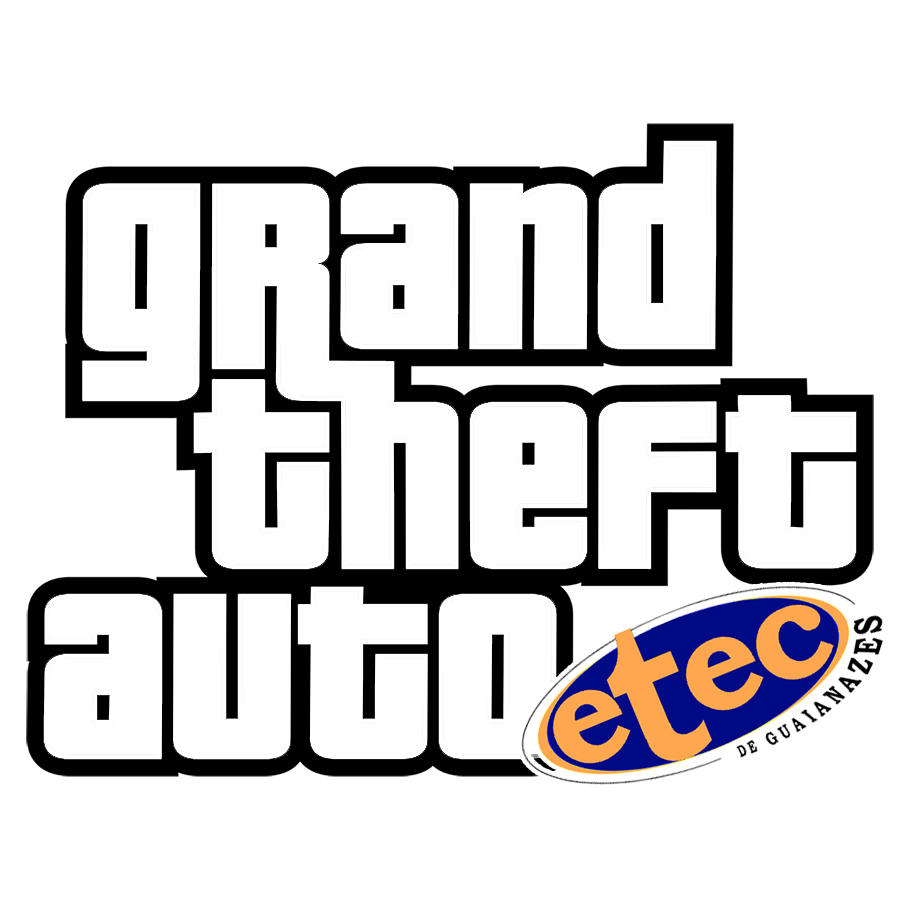

Início
Trailers
Gameplays
Versões Canceladas
Trilha Sonora
Changelog
História do GTA Etec

v0.1 - primeira versão - Telas de Loading adicionadas v0.2 - Jogo aprovado pelo público - Etec adicionada - Ônibus adicionados - Frases traduzidas - CJ feliz adicionado v0.3 - Júnior viu o jogo - Trens CPTM adicionados - Clodoaldo adicionado v0.3.5 - Júnior adicionado - Primeira versão para download - David Brian adicionado v0.4 - Suporte a Controles - Novo Ônibus, 407J - Suporte ao Discord (Com nome de GTA SA infelizmente, mais o lugar no mapa aperece igual no jogo "Dirigindo ClodoMóvel em Parque do Carmo") v0.5 - Júnior e Clodoaldo foram melhorados - Carros Brasileiros adicionados - Carros Brasileiros Removidos por Crasharem o jogo v0.6: - Novos Ônibus, 3033, 407J e 3754 - Agora o jogo conta com um editor, agora fica mais fácil de editar o mapa do jogo - Conteúdos promocionais atualizados e o jogo está disponível na Steam - Mais músicas na Rádio Etec - Possivelmente a compatibilidade do jogo foi aumentada - Elaine adicionada (Espero não me arrepender) - Mais frases "Traduzidas" - Nova capa e Banner - Missão do Diogo concluída - Diogo Adicionado - Trens Melhorados, mais parecido com os da CPTM - Mais trens no mapa v0.7 - Vinicius foi adicionado (ou foi tentado) - Ruy foi adicionado (não mudou nada) - Italo foi adicionado (Vá no cabelereiro e corte o cabelo Afro) - Não recomendo ouvir a Rádio Etec, ele crasha o jogo, esse é um problema do próprio GTA SA original, o maximo que pode fazer e apagar o cheat menu, ou apagar o CLEO.ASI da raíz do jogo, se você não estiver jogando pelo pendrive e seu PC for compatível use o MoonLoader Cheat Menu, já instalado, tecle Ctrl+M (Inclusive ele é mais completo que o antigo) v0.8 - Desenvolvimento retomado - Novo Ônibus 3686 JD São Paulo (No lugar do "Vincent") - Novo Ônibus 312N Escada (No lugar do "Premier") - Novo Ônibus 3006-21, da lenda do "Etec de Guaianazes - CPTM Guaianazes" (No lugar do "Primo") - Novo Ônibus Aleatório (No lugar do "Bravura") - Novo Ônibus 4051 (No lugar do "Merit") - CJ foi melhorado, agora com o uniforme da etec - Novo modelo do Diogo fora das cutscenes, nas cutscenes ele buga e fica com o bug da boca que acho que muitos já devem ter visto em algum lugar ( https://encrypted-tbn0.gstatic.com/images?q=tbn%3AANd9GcT-zIvzemrE7RIcC8Fyc_YdYtRawJGDTwZt8LzjyUAz3sAIBafQ ) - Agora passa chaves na casa do CJ - Quadros novos na casa do CJ - Casa do CJ foi reformada - ônibus articulado cinza adicionado (No lugar do caminhao de gasolina) - Júnior agora tem a camisa da oracle - TAVÃO tem a roupa da etec - Nova abertura do GTA ETEC - Nova missão "Reunindo os MTECs" (No lugar da missão da Sweet: "Reunindo as famílias") v1.0 - PRIMEIRA VERSÃO ESTÁVEL(Eu espero) - Várias partes do GTA Brasil adicionadas, deixando o jogo com mais cara de Brasil (Deixou tudo mais incrível) - Carros brasileiros estão de volta, sem travar o jogo - Finalmente como prometido, o Erico está no jogo, no lugar do Woozie (NÃO VEJA POR FAVOR, FICOU UMA BOSTA) - Grandes Melhrias na Rádio ETEC, agora com o Radio Etec Sinc - Mudanças nas músicas do loading, agora toca Linkin Park e Dear Ms Fantasy - 3063 Ar Condicionado adicionado, no lugar do Bravura - 3063 Escadão adicionado, no lugar do Cadrona - Tesla Cybetruck adicionado - Os primeiros passos na dublagem estão acontecendo (Valeu GTA Brasil) - Mais Um ônibus aleatório adicionado, agora com a pintura nova, no lugar do DFT-30 - 312N agora substitui o Stratum, so pra ele ir mais rápido, e mais realista - Trailer tá famoso v1.1 - Mais nomes da cidade atualizados - Italo melhorado - novo ônibus aleatório atualizado - Novo BIG TAVÃO - 407J Motor Euro 5-Ar Mais Puro Adicionado - Aviso! Alguns carros estão ganhando o seu nome certo, e os nomes das cidades foram trocados, automaticamente a função no Discord foi melhorada (Disponível desde a v0.4) - Agora eu acho que o problema dos carros batendo ou se explodindo não vai acontecer mais, eu acho - Depois de muitas tentativas, agora o jogo tem um novo ícone - Ricardo Milos no jogo agora v1.2 - Paulo adicionado, Junior agora é NPC - Novos outdoors - Elaine é polícia - Novas missões modificadas - CJ tem um PS4 - Novas músicas na rádio etec, como bom dia meu consagrado e tô de adidas - Etim agora tem a camisa do LAST_INFO - Novas imagens do loading feitas pelo Paulo, agora tem cara de GTA de verdade - Trailer novo, e o ultimo da trilogia - Logo atualizada v1.3 Versão Final - Jogo mais compactado, na 1.2 ele tinha 8.5GB, agora ele tem 7.2GB - Alguns textos atualizados, como Leslie agora ser o André, e o Segundo Etim ser só Etim - CJ Melhorado - 312N Euro 5 adicionado - Nova abertura do jogo - Teve versão nova do GTA Brasil, ou seja, todos os modelos do mapa da nova versão foram adicionados no GTA Etec - Icone de save agora é um disquete de PDF - Quantidade de veículos em tempo real foi aumentada, tem uma chance maior de crashar o jogo? Sim, mas até agora tá rodando de boa - Matando um meme, distância de visão dos veículos foi aumentada, fim do meme do 312N sumindo do nada (Pode ser que o jogo fique um pouco mais pesado, provavelmente se deixar ele no low nas configurações melhore isso). - Um EMTU adcionado - Várias músicas novas adicionadas na Rádio Etec, muitas mesmo - Mais textos atualizados - Missões novas: Italo, Fora Ruy, Limpando o Bairro, Tiroteio no Mega Esfiha, 9mm e AKs, Era uma vez um DIoguinho, Yago? Vemos. Lolis? Não Sabemos - Modo Primeira Pessoa adicionado - Igreja de Guaianases adicionada - Novo HUD - Melhorias nas fontes do HUD - Ícones das missões com as "carinhas" do pessoal da sala - Missão nova "Tu tá na Disney?" - Burger King e Mega Esfiha adicionados - NOVAS EXPLOSÕES - Nova missão "Proxima Estação: Terminal... Guaianazes" - Nova missão "Missão Hollywoodiana em Itaquera" - Nova fonte de legendas: Segoe Ui, no lugar da Arial - Nova Missão "Não vai ter TCC esse ano" - Nova Missão "Roubando do Bolsonaro" - Mudei a ferramenta de edição dos textos do GTA, com a ajuda do Danylo, agora fica muito mais fácil fazer novas missões - Douglas no jogo, SIM EU MESMO ME COLOQUEI - Tem muitas missões novas, provavelmente uma ou outra eu esqueci de colocar aqui - o mod de dexar o jogo com os mapas liberados foi removido por dar muitos problemas, por isso, saves de versões anteriores são incompatíveis, mas saves do GTA SA podem funcionar - Novos sons de armas e explosões - Novos efeitos de fumaça, explosões, faíscas... - TODAS as missões de Los Santos foram alteradas, parte principal completa - Jogo praticamente completo, provalvemente agora só tera umas pequenas mudanças